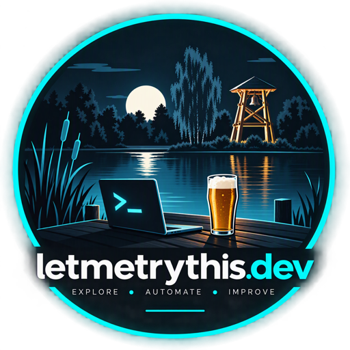

WindowsAutopatchFix ⭐ 8
PowerShell-Skripte zur Behebung häufiger Windows Autopatch-Probleme und Enrollment-Fehler.
Details zu WindowsAutopatchFixPowerShell · Intune · Entra ID · iOS Apps
IT Specialist aus Deutschland – ich baue PowerShell-Tools für Intune, SCCM, Endpoint Security und Windows Autopatch, und entwickle iOS-Apps am Feierabend.

IT Specialist mit Fokus auf Microsoft Endpoint Management, Automatisierung und PowerShell-Scripting.
GitHub Repositories
PowerShell-Tools und Skripte rund um Microsoft Endpoint Management – alle Open Source auf GitHub.
PowerShell-Skripte zur Behebung häufiger Windows Autopatch-Probleme und Enrollment-Fehler.
Details zu WindowsAutopatchFixPrüft alle Microsoft-Endpoints für Intune, Defender, WUfB, Autopatch und Entra auf Erreichbarkeit.
Details zu CheckMicrosoftEndpointsPowerShell-Tool zur Auswertung von Betriebssystem-Versionen aller Geräte in Microsoft Intune.
Details zu Intune DeviceOS ReportPrivate App
Eine private App im Bau, die es eigentlich nie geben sollte – aber all meine Hobbys ein bisschen zusammenfasst. Hier gibt es einen Ausblick auf die nächsten Entwicklungsschritte.
Privates Repository
Geplante Verbesserungen rund um Komfort, Auswertungen, Offline-Nutzung und einfache Administration.
Blog
Kurze technische Artikel und Learnings aus der Praxis – PowerShell, Intune und was am Feierabend noch so anfällt.
Die DSA-Freigabe ist durch, die App ist in Deutschland und der EU verfügbar – und die ersten Feature Requests sind schon da.
AI Readiness beginnt nicht mit einer Copilot-Lizenz. Warum Identitäten, Daten, Geräte, Prozesse und Governance die eigentliche Basis sind.
Vier Tage voller AI, Security und Community: Was ich aus den Diskussionen rund um Agents, Vibecoding und Verantwortung mitnehme.
Ich habe meine App an Apple zum internen Review geschickt und bin gespannt auf die Rückmeldung und den nächsten Schritt.
Warum Apple-Review und Digital Services Act zwei unterschiedliche Ebenen sind – und warum technische Freigabe noch kein echter Marktstart ist.
Was sich mit der Graph API, PowerShell und etwas Kreativität im Endpoint Management automatisieren lässt.
Ein Platz für Projekte, Skripte und App-Experimente – statisch, schnell und ohne Build-Overhead.
Open Source
PowerShell-Tools für Intune, Autopatch, Entra ID und mehr – kostenlos und Open Source. Issues und Feedback willkommen.
Alle Repos ansehen